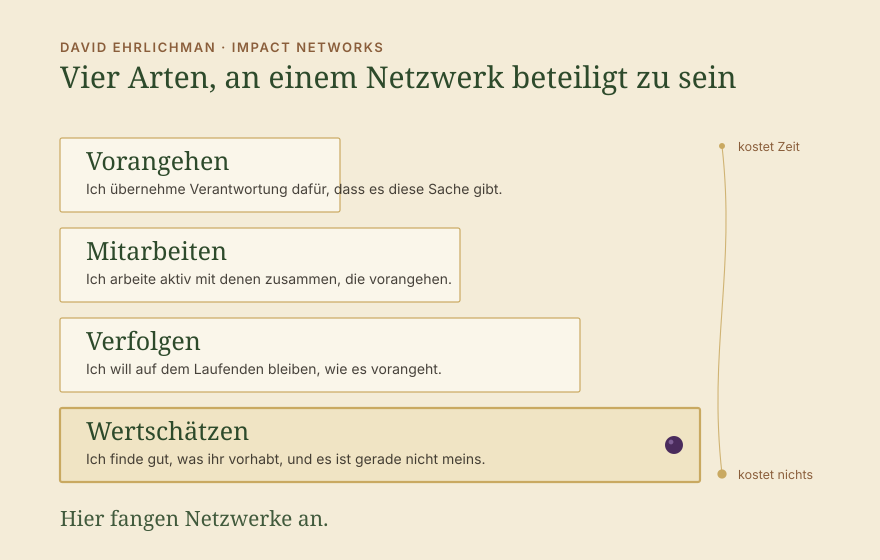
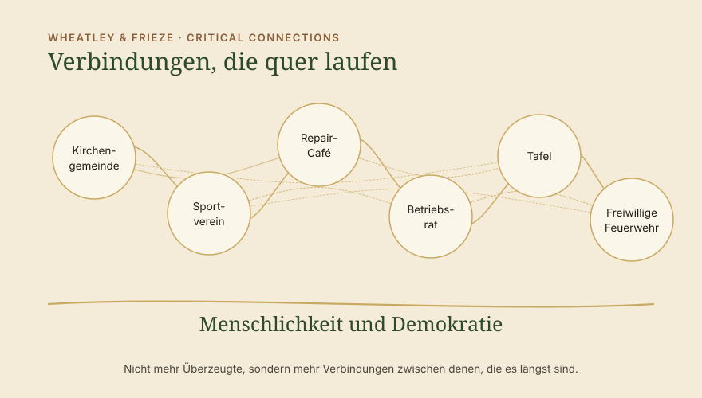

Impuls · Gesellschaft als Netzwerk denken: Demokratie und Menschlichkeit sind nicht mehr selbstverständlich
Die Wahl in Sachsen-Anhalt hat gezeigt, wie knapp wir vor der Katastrophe stehen. So erschreckend das Ergebnis ist, so froh muss man sein, dass wir an der absoluten Mehrheit der AfD noch einmal vorbeigeschrammt sind. Wir haben etwas Zeit gewonnen, und diese Zeit sollten wir nutzen. Nutzen heißt für uns, ein Wir zu bilden, das über die einzelnen Themen hinausgeht, sodass wir die Basis wieder stärken. Die Basis dafür haben wir längst, sehen sie nur nicht mehr. Und das Netzwerken auf dieser Basis fängt viel früher an, als wir denken.

Die Basis: Was wir teilen, ohne es zu sehen
Die Basis ist eine gewisse Art der Menschlichkeit, also die Würde des Menschen, und dazu die demokratischen Grundrechte. Menschlichkeit und Demokratie, und das sollte ausreichen, um in Netzwerken zu denken. Wer das erfüllt, macht etwas Gutes. Die Tafel mit einem Mittagstisch, die linke Ortsgruppe mit dem Repair-Café, der Sportverein, der Betriebsrat oder auch die Kirchengemeinde. Die Liste ist lang.
Und obwohl wir dem wahrscheinlich breit zustimmen, sehen wir nicht mehr, was die Basis ist, und vergessen, dass wir es gut finden. Je nach eigener Sichtweise kritisieren wir die Religion, die wirtschaftliche Tätigkeit des Unternehmens, den Sportverein oder dass Obdachlose nicht arbeiten. Was wir dabei kaum noch sehen, weil es lange die Basis der Gesellschaft und damit selbstverständlich war, ist, dass wir die Tätigkeiten und die Intention der Menschen viel häufiger anerkennen und gut finden können und dabei gar nicht allem zustimmen müssen. Statt die Intention und die Tätigkeit anzuerkennen, kritisieren wir. Du engagierst dich ausgerechnet in der Kirche. Du bist bei den Linken in der Ortsgruppe. Mit Sport ändert sich doch nichts. Wozu kümmerst du dich um Auszubildende, wenn im Betrieb sowieso alles den Bach runtergeht. Besonders häufig passiert das dort, wo Menschen einander nicht über ein gemeinsames Thema begegnen, sondern in der Familie oder in loseren Zusammenhängen. Genau da fehlt dann die solidarische Unterstützung für das, was der andere tut.
Wir sollten alle verstehen, dass die Selbstverständlichkeiten, die wir hier 75 Jahre genießen durften, leider nicht gesichert selbstverständlich bleiben, und dass es jetzt Arbeit ist, sie uns zu erhalten. Wenn wir Demokratie und Menschlichkeit als Teil unseres Gesellschaftssystems sehen wollen, dann sollten wir auch Toleranz, Anerkennung und Wertschätzung ausdrücken lernen. Ich muss nicht wollen, was die andere Person tut. Ich muss erkennen, dass sie es gut meint und dass sie die Demokratie achtet. Unterschiede müssen wir seltener ausdiskutieren oder auflösen. Unterschiede dürfen bleiben und sind letztlich sogar das, worauf unser System beruht: Freiheit.


Die autoritäre Abkürzung: Angst und Zugehörigkeit
Die extreme Rechte wächst erschreckend schnell, und das liegt zum Teil an ihren autoritären Strukturen. Menschen werden dort emotional mitgenommen, meist über Angst und Zugehörigkeit, und geben dabei auf einmal viel von ihrer Freiheit ab und vertrauen auf die Personen. Was diese Personen danach sagen, steht damit schnell als eigene Meinung, und nach außen sieht das geschlossen aus. Das Zugehörigkeitsgefühl entsteht schnell, aber es beruht, so hoffe ich, bei den meisten noch auf einer falschen Wahrnehmung und nicht auf der eigenen Meinung. Wenn Zugehörigkeit auf der demokratischen Seite dagegen keine Option ist, wie wollen wir den Trend dann umkehren? Gibt es eine Alternative?
Was wir dem entgegensetzen sollten, besteht aus vielen, die selbst entscheiden und einander stützen. Das braucht länger und ist Arbeit, und es hält dafür mehr aus, weil es an keiner einzelnen Person hängt. Damit es in dem Moment da ist, in dem es gebraucht wird, müssen wir die Verbindungen aktiv gestalten. Und dieses Gefühl der Zugehörigkeit sollten wir auf einer soliden Basis eben auch schaffen. Auf der Basis von Demokratie und Menschlichkeit gehören wir dazu. Wir sind die Gesellschaft, und Gesellschaft ist ein Netzwerk, das gepflegt werden will.
Netzwerken fängt bei der Wertschätzung an

David Ehrlichman beschreibt in Impact Networks, wie Netzwerke entstehen, die etwas in der Gesellschaft bewegen wollen. Eine seiner Beobachtungen ist, dass es verschiedene Ebenen in Netzwerken gibt. Menschen sind auf vier verschiedene Arten an einem Netzwerk beteiligt, und ein Netzwerk lebt davon, dass alle vier gelten.
Hier geht es um die Wertschätzung. Die ersten beiden nehmen viel Zeit in Anspruch, und Zeit hat kaum jemand für mehr als ein oder zwei Anliegen. Auch die dritte hat ihre Grenze, denn niemand kann sich über alles informieren lassen und überall den Newsletter abonnieren.
Die vierte ist die, die wir übersehen. Sie kostet kaum Zeit, kein Geld und keine Mitgliedschaft, sie ist nur eine kleine Aufmerksamkeit, und sie ist der Anfang von allem Weiteren. Was heute an ihrer Stelle passiert, ist Kritik auf den Ebenen darüber. Wer etwas auf die Beine stellt, bekommt zu hören, warum es das Falsche ist oder zu wenig. Das nimmt den Leuten die Lust, und deshalb hören viele auf, die weitermachen würden. Wertschätzung hält sie in der Arbeit, und das ist die Stärkung, die es braucht. Super, dass du dich für dein Anliegen einsetzt! Hier entsteht das Netzwerk, das wir Gesellschaft nennen und das so lange selbstverständlich war und es leider nicht mehr ist. Hier beginnt die Stärkung der Zivilgesellschaft. Das ist heute Antifaschismus.
Wie das im Alltag aussieht
Als CDU-Wählerin dem Repair-Café der linken Ortsgruppe schreiben, dass es gut ist, wie viel dort repariert wird. Als Linker dem Onkel im Boxclub sagen, wie stark es ist, dass er sich um die Jugendlichen dort kümmert. Als Chefin dem Betriebsratsvorsitzenden sagen, dass es gut ist, dass er sich engagiert, so anstrengend das hier gerade für alle ist. Als Klimaaktivistin dem Schützenverein sagen, dass er im Dorf mehr Menschen zusammenbringt als jede Veranstaltung sonst. Als Städter der freiwilligen Feuerwehr auf dem Land sagen, dass es gut ist, dass nachts jemand rausfährt. Als Unternehmer der Tafel sagen, dass es gut ist, dass es sie gibt.
Eine kurze E-Mail reicht, ein kurzes Cool im Gespräch am Tisch bei der Kommunion. Ich finde gut, was ihr macht, macht weiter. Wer das hört, arbeitet am nächsten Tag anders weiter, und wer es schreibt, hat eine Verbindung, die es vorher nicht gab.
Das gilt auch dort, wo jemand Mittel wählt, die ich selbst nicht wählen würde. Gewaltfreie Aktionen, die an die Grenze des Gesetzes gehen, haben ein Anliegen, und dieses Anliegen kann ich nachvollziehen, ohne die Aktion zu unterstützen. Die Wertschätzung für den Einsatz auszusprechen, gerade wenn die Aktion kritisiert wird, macht einen wichtigen Unterschied für die Stärkung der Gesellschaft.
Verbindungen quer durch das demokratische Spektrum

Meg Wheatley und Deborah Frieze haben 2007 für das Berkana Institute einen Satz aufgeschrieben, der uns dabei hilft: Statt uns um eine kritische Masse zu sorgen, besteht unsere Arbeit darin, kritische Verbindungen zu schaffen. Es geht also nicht um die Zahl der Überzeugten, sondern um die Verbindungen zwischen denen, die den demokratischen Kern erhalten wollen.
Diese Verbindungen brauchen wir heute quer durch das demokratische Spektrum, von der Linkspartei bis zur CDU. Sie entstehen leichter in der Zivilgesellschaft als zwischen den Parteien. Von den Parteien ist im Moment wenig zu erwarten, weil die Polarisierung längst zwischen ihnen selbst verläuft. Wenn die Verbindungen unten da sind, wird oben mehr möglich. Dann wäre es für eine CDU in Sachsen-Anhalt einfacher zu sagen: Lass uns die nächsten vier Jahre zusammen schauen, was wir gemeinsam bewegen können.
Darum geht es beim Netzwerken zum Gesellschaftserhalt. Die Polarisierung innerhalb des demokratischen Spektrums ist das, was uns gerade schadet. Anerkennung und Wertschätzung für demokratisches, menschliches Handeln, das noch so zahlreich möglich ist, nehmen ihr den Boden.
Die Zivilgesellschaft auf der Basis von Menschlichkeit und Demokratie wirklich in ihrer Breite zu stärken, erhält die Gesellschaft, wie wir sie kennen. Das ist das, was wir alle tun können. Klar gibt es Arbeit darüber hinaus, um Mehrheiten der extremen Rechten zu verhindern, aber das hier sollte die Basis sein, an der wir alle gemeinsam mitarbeiten. Wenn nicht jetzt, wann dann?
Lass uns alle mehr Anerkennung und Wertschätzung aussprechen, und zwar da, wo es uns schwerfällt, da, wo die Verbindungen kritisch sind, und wo wir uns eingestehen sollten: Das ist demokratisch, da steht ein Anliegen dahinter, das Positives für Menschen im Sinn hat. Weiter so, das brauchen wir.
→ Systems Change → Kooperiere mit uns
Quellen
- Ehrlichman, D.: Impact Networks. Create Connection, Spark Collaboration, and Catalyze Systemic Change. Berrett-Koehler, Oakland 2021.
- Wheatley, M.; Frieze, D.: Using Emergence to Take Social Innovations to Scale. The Berkana Institute, in: Fieldnotes, Winter 2007.